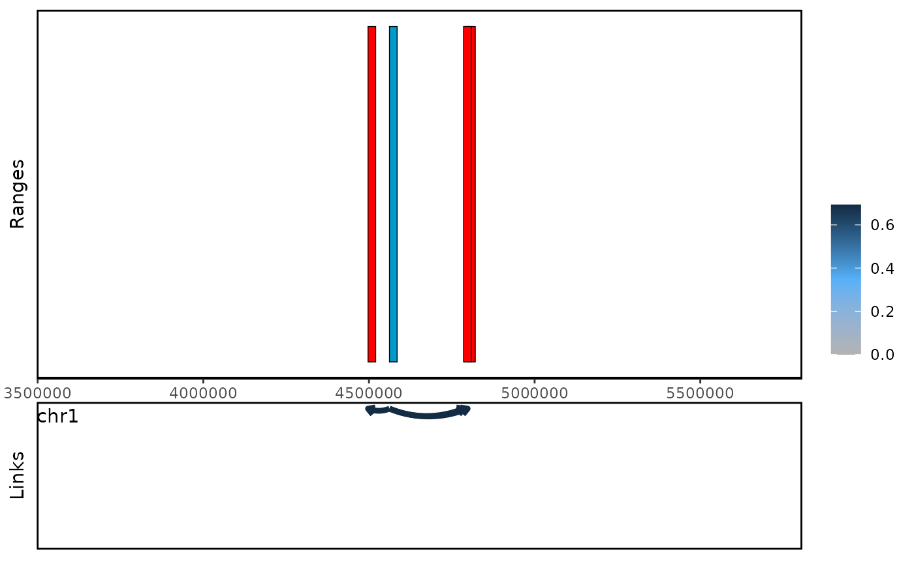

Introduction
This vignette provides a step-by-step guide to using the
linkSet package to analyze Hi-C/HiChIP data. We will use a
toy example to illustrate the main functions and workflows. Our goal is
to identify the enhancer-gene links in this example
We will use the following datasets as input:
- validPairs produced by HiC-Pro.
- Mouse embryo body enhancer data from enhancer atlas website.
- Gene annotation data from TxDb.Mmusculus.UCSC.mm10.knownGene pakcage.
We highly recommend you to use custom data instead of the example data provided in this vignette.
Setup
if (!require("BiocManager", quietly = TRUE))
install.packages("BiocManager")
suppressPackageStartupMessages({
library(linkSet)
library(TxDb.Mmusculus.UCSC.mm10.knownGene)
library(org.Mm.eg.db)
library(Organism.dplyr)
library(InteractionSet)
})We use our custom function readvalidPairs to load the example
data. Firstly, we need to load into GInteractions
object.
hic_file <- system.file("extdata", "toyExample.pair.gz",
package="linkSet")
gi <- readvalidPairs(hic_file,format = "pair")
#> Reading file...
#> Converting to GInteractions...
promoterGr <- withTxDb("mm10", function(src) {
genes <- Organism.dplyr::genes(src, columns = "symbol")
IRanges::promoters(genes, upstream = 10000)
})
#> creating 'src_organism' database...
#> Warning in valid.GenomicRanges.seqinfo(x, suggest.trim = TRUE): GRanges object contains 3 out-of-bound ranges located on sequences
#> chr4_JH584294_random, chr4_JH584292_random, and chr5_GL456354_random.
#> Note that ranges located on a sequence whose length is unknown (NA) or
#> on a circular sequence are not considered out-of-bound (use
#> seqlengths() and isCircular() to get the lengths and circularity flags
#> of the underlying sequences). You can use trim() to trim these ranges.
#> See ?`trim,GenomicRanges-method` for more information.
file_url <- c("http://www.enhanceratlas.org/data/download/enhancer/mm/Embryo_body.bed")
enhancer <- rtracklayer::import(file_url, format="BED")Because the hic data only contains digist end, so we resize the
region to upstream 5kb and downstream 5kb. After that, we use
baitGInteractions to generate the linkSet
object.
gi <- resize(gi,10000,fix = "center")
ls <- baitGInteractions(gi,geneGr = promoterGr,peakGr = enhancer,"symbol")
ls
#> linkSet object with 27 interactions and 2 metadata columns:
#> bait seqnames_oe ranges_oe | anchor1.symbol
#> <character> <Rle> <IRanges> | <character>
#> [1] Xkr4 --- chr1 51753961-51754690 | Xkr4
#> [2] Xkr4 --- chr1 38494581-38496180 | Xkr4
#> [3] Xkr4 --- chr1 38496241-38496840 | Xkr4
#> [4] Rp1 --- chr1 14496641-14497000 | Rp1
#> [5] Sox17 --- chr1 90401091-90402520 | Sox17
#> ... ... ... ... ... . ...
#> [23] Npbwr1 --- chr1 59014721-59015250 | Npbwr1
#> [24] Rb1cc1 --- chr1 45369781-45370210 | Rb1cc1
#> [25] Rb1cc1 --- chr1 33869921-33870570 | Rb1cc1
#> [26] Rb1cc1 --- chr1 94074541-94075190 | Rb1cc1
#> [27] Alkal1 --- chr1 12683361-12683590 | Alkal1
#> anchor2.name
#> <character>
#> [1] 11.4716435093611
#> [2] 11.9206847715326
#> [3] 11.1575156050835
#> [4] 16.1891332694206
#> [5] 11.3810398990553
#> ... ...
#> [23] 11.2298655414852
#> [24] 16.4355294570208
#> [25] 11.2829690359357
#> [26] 10.9286062722993
#> [27] 14.0682990384515
#> -------
#> regions: 30 ranges and 0 metadata columns
#> seqinfo: 66 sequences (1 circular) from mm10 genomeWhen we print the linkSet object, we can see the basic
information of the linkSet object. By default, we don’t
show the bait region. But you are interested in the bait region, you can
set showBaitRegion = TRUE.
showLinkSet(ls, baitRegion = TRUE)
#> linkSet object with 27 interactions and 2 metadata columns:
#> bait seqnames_bait ranges_bait seqnames_oe ranges_oe |
#> [1] Xkr4 chr1 3671299-3681498 --- chr1 51753961-51754690 |
#> [2] Xkr4 chr1 3671299-3681498 --- chr1 38494581-38496180 |
#> [3] Xkr4 chr1 3671299-3681498 --- chr1 38496241-38496840 |
#> [4] Rp1 chr1 4409042-4419241 --- chr1 14496641-14497000 |
#> [5] Sox17 chr1 4497155-4507354 --- chr1 90401091-90402520 |
#> ... ... ... ... ... ... ... .
#> [23] Npbwr1 chr1 5917199-5927398 --- chr1 59014721-59015250 |
#> [24] Rb1cc1 chr1 6196197-6206396 --- chr1 45369781-45370210 |
#> [25] Rb1cc1 chr1 6196197-6206396 --- chr1 33869921-33870570 |
#> [26] Rb1cc1 chr1 6196197-6206396 --- chr1 94074541-94075190 |
#> [27] Alkal1 chr1 6349218-6359417 --- chr1 12683361-12683590 |
#> anchor1.symbol anchor2.name
#> [1] Xkr4 11.4716435093611
#> [2] Xkr4 11.9206847715326
#> [3] Xkr4 11.1575156050835
#> [4] Rp1 16.1891332694206
#> [5] Sox17 11.3810398990553
#> ... ... ...
#> [23] Npbwr1 11.2298655414852
#> [24] Rb1cc1 16.4355294570208
#> [25] Rb1cc1 11.2829690359357
#> [26] Rb1cc1 10.9286062722993
#> [27] Alkal1 14.0682990384515Diagnose and filter links
Now, we can run diagnoseLinkSet to check the distance distribution and inter/intra interaction percentage.
diagnoseLinkSet(ls)
#> `stat_bin()` using `bins = 30`. Pick better value with `binwidth`.
#> linkSet object with 27 interactions and 4 metadata columns:
#> bait seqnames_oe ranges_oe | anchor1.symbol
#> <character> <Rle> <IRanges> | <character>
#> [1] Xkr4 --- chr1 51753961-51754690 | Xkr4
#> [2] Xkr4 --- chr1 38494581-38496180 | Xkr4
#> [3] Xkr4 --- chr1 38496241-38496840 | Xkr4
#> [4] Rp1 --- chr1 14496641-14497000 | Rp1
#> [5] Sox17 --- chr1 90401091-90402520 | Sox17
#> ... ... ... ... ... . ...
#> [23] Npbwr1 --- chr1 59014721-59015250 | Npbwr1
#> [24] Rb1cc1 --- chr1 45369781-45370210 | Rb1cc1
#> [25] Rb1cc1 --- chr1 33869921-33870570 | Rb1cc1
#> [26] Rb1cc1 --- chr1 94074541-94075190 | Rb1cc1
#> [27] Alkal1 --- chr1 12683361-12683590 | Alkal1
#> anchor2.name inter_type distance
#> <character> <character> <integer>
#> [1] 11.4716435093611 inter 48077927
#> [2] 11.9206847715326 inter 34818982
#> [3] 11.1575156050835 inter 34820142
#> [4] 16.1891332694206 inter 10082679
#> [5] 11.3810398990553 inter 85899551
#> ... ... ... ...
#> [23] 11.2298655414852 inter 53092687
#> [24] 16.4355294570208 inter 39168699
#> [25] 11.2829690359357 inter 27668949
#> [26] 10.9286062722993 inter 87873569
#> [27] 14.0682990384515 inter 6329158
#> -------
#> regions: 30 ranges and 0 metadata columns
#> seqinfo: 66 sequences (1 circular) from mm10 genomeIntrachromosomal interaction and long distance interaction are likely be noise, so we filter them.
ls <- countInteractibility(ls)
#> Warning in countInteractibility(ls): No intra-chromosomal interactions found.
#> Please run this function before you filterLinks.
ls <- filterLinks(ls,filter_intra = TRUE, filter_unannotate = TRUE, distance = 50000000)Duplicated links are associated with contact frequency, so it’s a good idea to count duplicated links.
ls <- countInteractions(ls)
orderLinks(ls,by = "count",decreasing = TRUE)
#> linkSet object with 15 interactions and 5 metadata columns:
#> bait seqnames_oe ranges_oe | anchor1.symbol
#> <character> <Rle> <IRanges> | <character>
#> [1] Xkr4 --- chr1 51753961-51754690 | Xkr4
#> [2] Xkr4 --- chr1 38494581-38496180 | Xkr4
#> [3] Xkr4 --- chr1 38496241-38496840 | Xkr4
#> [4] Rp1 --- chr1 14496641-14497000 | Rp1
#> [5] Sox17 --- chr1 4561881-4562150 | Sox17
#> ... ... ... ... ... . ...
#> [11] Rgs20 --- chr1 44099101-44099360 | Rgs20
#> [12] Npbwr1 --- chr1 39818891-39819140 | Npbwr1
#> [13] Rb1cc1 --- chr1 45369781-45370210 | Rb1cc1
#> [14] Rb1cc1 --- chr1 33869921-33870570 | Rb1cc1
#> [15] Alkal1 --- chr1 12683361-12683590 | Alkal1
#> anchor2.name inter_type count distance
#> <character> <character> <integer> <integer>
#> [1] 11.4716435093611 inter 1 48077927
#> [2] 11.9206847715326 inter 1 34818982
#> [3] 11.1575156050835 inter 1 34820142
#> [4] 16.1891332694206 inter 1 10082679
#> [5] 13.507493224644 inter 1 59761
#> ... ... ... ... ...
#> [11] 11.3026423239041 inter 1 39024045
#> [12] 12.9148641505382 inter 1 33896717
#> [13] 16.4355294570208 inter 1 39168699
#> [14] 11.2829690359357 inter 1 27668949
#> [15] 14.0682990384515 inter 1 6329158
#> -------
#> regions: 20 ranges and 0 metadata columns
#> seqinfo: 66 sequences (1 circular) from mm10 genomeWe can notice that there is a significant link strength between
Sulf1 and chr1:12785091-12785750.
Cross gene links and visualization
Enhancers that regulate multiple genes are biologically meaningful.
ls <- crossGeneEnhancer(ls)
ls <- orderLinks(ls,by = "crossFreq",decreasing = TRUE)
ls
#> linkSet object with 15 interactions and 6 metadata columns:
#> bait seqnames_oe ranges_oe | anchor1.symbol
#> <character> <Rle> <IRanges> | <character>
#> [1] Sox17 --- chr1 4561881-4562150 | Sox17
#> [2] Lypla1 --- chr1 4561881-4562150 | Lypla1
#> [3] Mrpl15 --- chr1 4561881-4562150 | Mrpl15
#> [4] Lypla1 --- chr1 33869921-33870570 | Lypla1
#> [5] Mrpl15 --- chr1 33869921-33870570 | Mrpl15
#> ... ... ... ... ... . ...
#> [11] Lypla1 --- chr1 34163531-34164100 | Lypla1
#> [12] Rgs20 --- chr1 44099101-44099360 | Rgs20
#> [13] Npbwr1 --- chr1 39818891-39819140 | Npbwr1
#> [14] Rb1cc1 --- chr1 45369781-45370210 | Rb1cc1
#> [15] Alkal1 --- chr1 12683361-12683590 | Alkal1
#> anchor2.name inter_type count distance crossFreq
#> <character> <character> <integer> <integer> <integer>
#> [1] 13.507493224644 inter 1 59761 3
#> [2] 13.507493224644 inter 1 240872 3
#> [3] 13.507493224644 inter 1 228624 3
#> [4] 11.2829690359357 inter 1 29067358 3
#> [5] 11.2829690359357 inter 1 29079606 3
#> ... ... ... ... ... ...
#> [11] 11.2903880454209 inter 1 29360928 1
#> [12] 11.3026423239041 inter 1 39024045 1
#> [13] 12.9148641505382 inter 1 33896717 1
#> [14] 16.4355294570208 inter 1 39168699 1
#> [15] 14.0682990384515 inter 1 6329158 1
#> -------
#> regions: 20 ranges and 0 metadata columns
#> seqinfo: 66 sequences (1 circular) from mm10 genomeWe can use plot_genomic_ranges to visualize the cross
gene links.
plot_genomic_ranges(ls,showOE = oe(ls)[1])
We can also choose to visualze the bait center region.
plot_genomic_ranges(ls,showBait = "Xkr4")